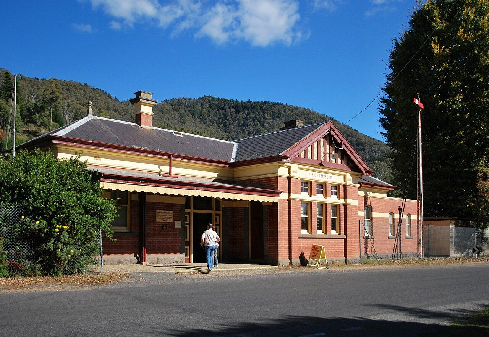
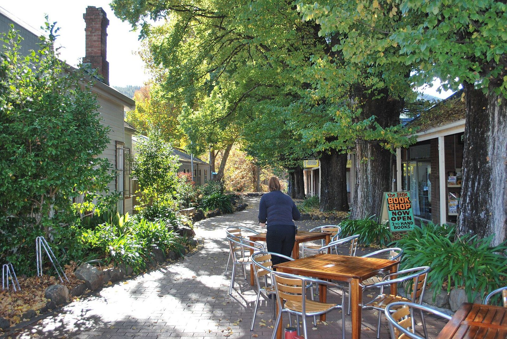
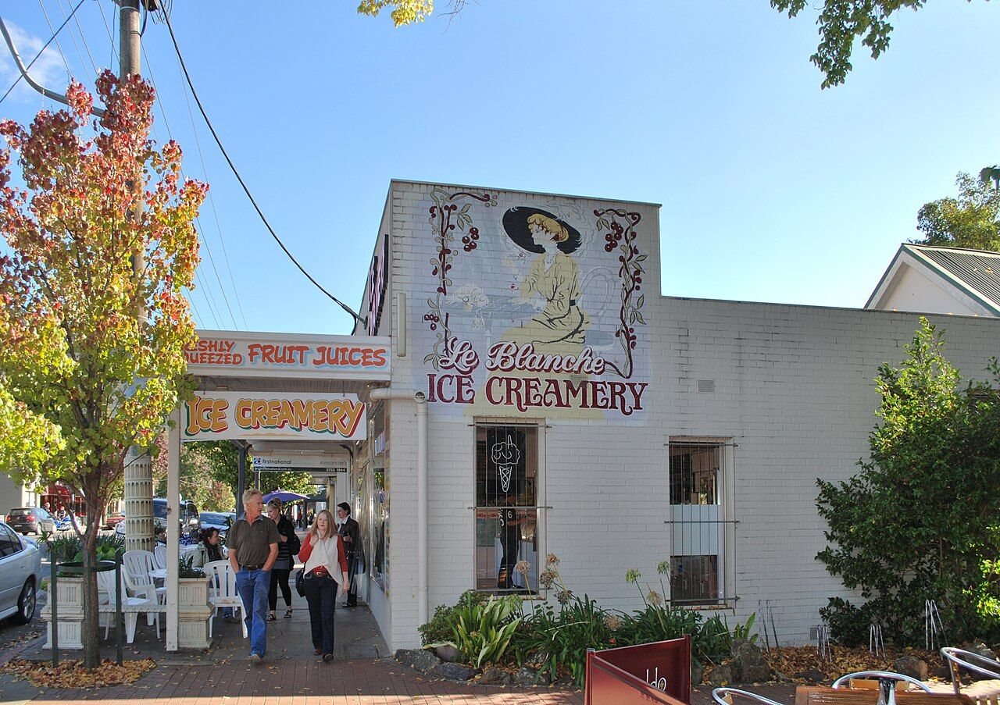
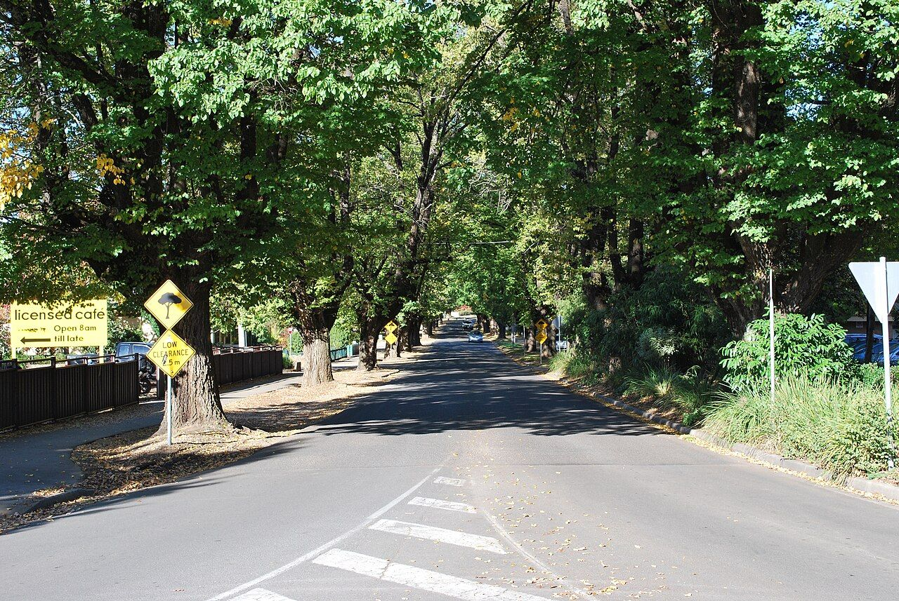

Bright is our nearest town, 8 km up the valley. It's where guests go for coffee, dinner, shopping and a wander by the river, and it's an easy ride from our gate.
Getting there from here
By car, turn towards Bright at our gate and follow the Great Alpine Road. On a fine day, take the Murray to Mountains Rail Trail instead. It's across the road from us, flat and sealed, and ends at the old railway station in the middle of town. Lock the bikes and everything is within walking distance.

What to do
- Start at the Visitor Centre at 119 Gavan Street. It's open every day, with maps, the walks and cycle guides, and what's on this week.
- Centenary Park has the Bright River Pool in the Ovens, a waterslide over the January holidays and, in the warmer months, a splash park for children.
- Walk the river. The Canyon Walk starts at Howitt Park and follows the Ovens: 2.5 km, about 45 minutes, with a longer option.
- The Bright Railway museum, run by the historical society at the old station, opens on weekend afternoons from September to May, with extra days in the school holidays.
- Bright Art Gallery on Mountbatten Avenue is community-run, with changing exhibitions. Entry is by donation.
- Lunch and dinner. Bright has plenty of cafés and restaurants, and Bright Brewery is open seven days.



Markets
- Porepunkah People's Market, second Saturday of the month, 9am to 1pm at the Porepunkah Community Hall. The closest to us.
- Make It, Bake It, Grow It Market, third Saturday of the month, 8.30am to 12.30pm at Howitt Park in Bright.
- Myrtleford Farmers Market, fourth Saturday of the month, 8.30am to 12.30pm at the Piazza in Myrtleford.
- Bright Rotary Markets, five times a year.

Useful links
- Bright Visitor Information Centre
- Visit Bright: markets, for the latest dates
- Bright splash park and river pool
- Bright & District Historical Society, for museum opening times
- Bright Art Gallery and Bright Brewery
Top photo: Chensiyuan, CC BY-SA 4.0, via Wikimedia Commons.


.jpg){kind=link}